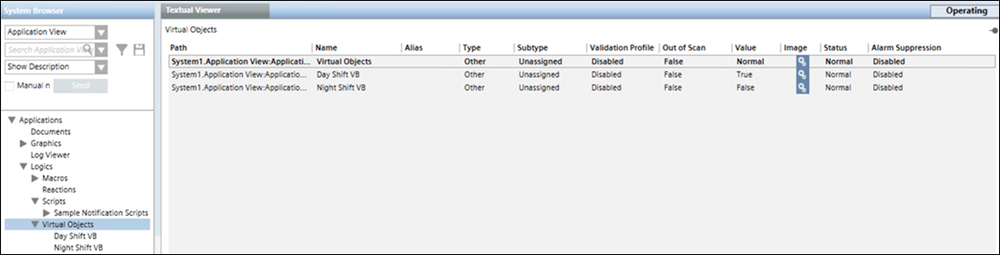
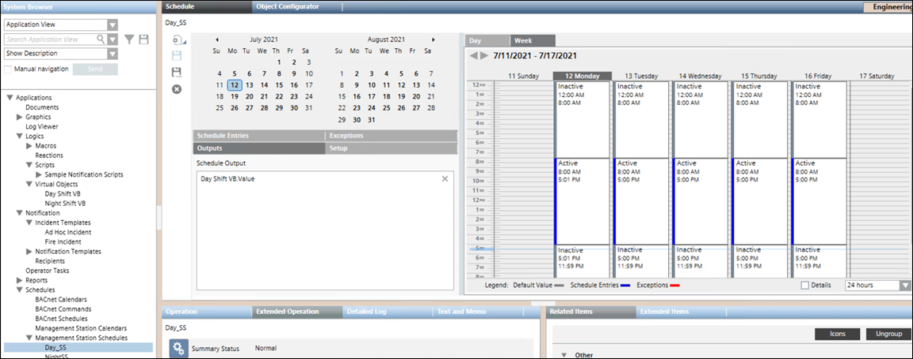
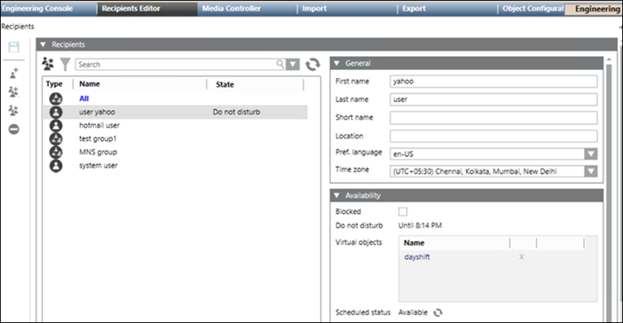
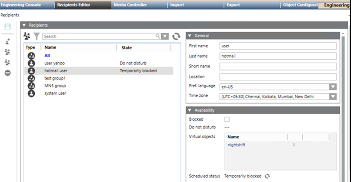

Controlling the Recipients Availability using the Management Scheduler
In the following example, you will create two groups namely, one for day shift (8.00AM to 5.00PM) and the other for night shift (5.00PM to 8.00AM). The recipient group members shall receive notifications only during their corresponding shift time.
- System Manager is in Engineering Mode.
- System Browser is in Application View.
- Select Applications> Logics > Virtual Objects in the System Browser and then create virtual binary objects namely, Day Shift VB and Night Shift VB. (For more information, refer to Virtual Objects topic).

- Select Schedules > Management Station Schedules in the System browser and then create two schedulers namely, Day_SS and NightSS. (For more information, refer to Management Scheduler topic) The following image displays the Day_SS options.
NOTE: You must add appropriate setting for the two schedulers. 
- Select Notification > Recipients node in the System Browser.
- In the Recipients tab, create the two recipient groups, namely Day_shift and Night_shift.
- In the Day_shift recipient group, under the Availability expander, drag and drop the created Day Shift VB in the Virtual objects section.

- In the Night_shift recipient group, under the Availability expander, drag and drop the created Night Shift VB in the Virtual objects section.

- Click Save.
- Add the Day_shift and Night_shift recipient groups to the desired Notification template.
- If the Incident is triggered, then the corresponding Notification will be sent to the day shift or night shift group according to the shift time and their scheduled availability.